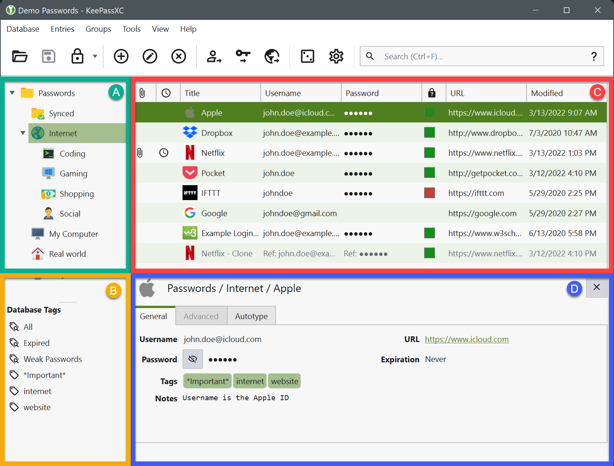
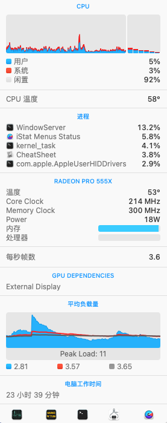
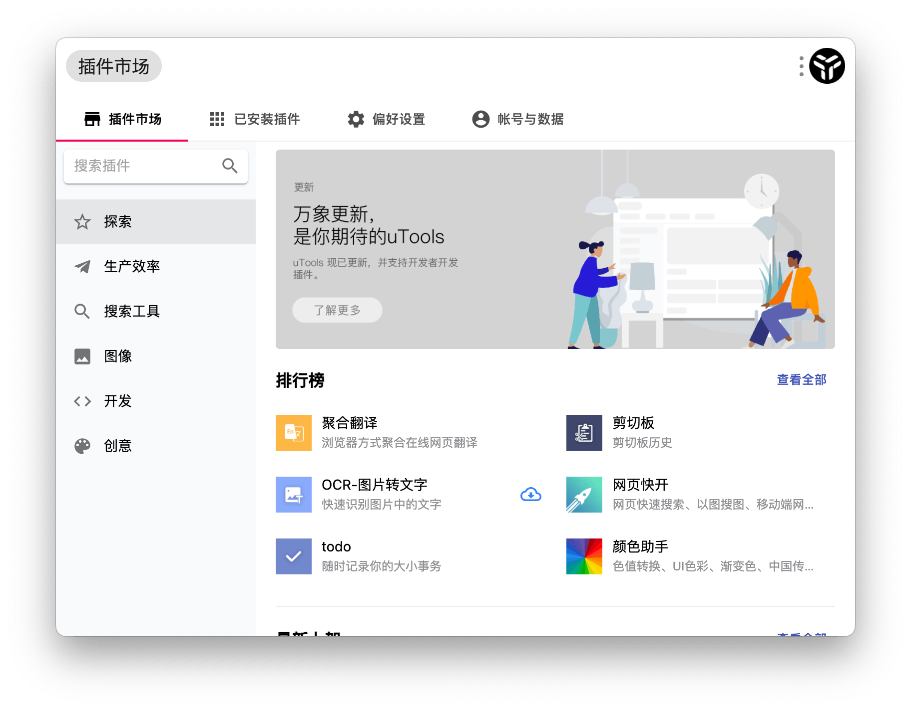
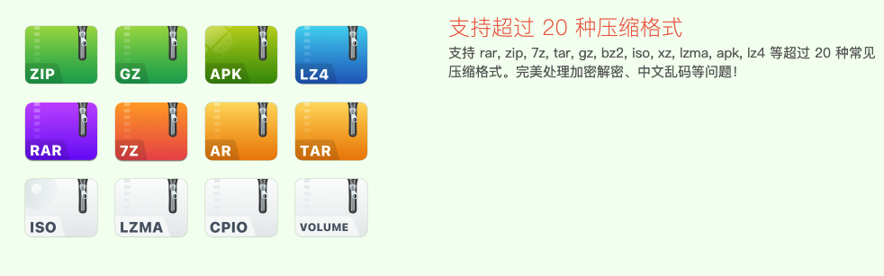

Mac 上软件推荐
- 1、 截图软件
- 2、软件卸载工具
- 3、CheatSheet
- 4、PicGo
- 5、itsycal
- 6、SourceTree
- 7、Postman
- 8、Go2Shell
- 9、Alfred
- 10、Sequel Pro
- 11、抓包工具
- 12、密码管理工具
- 13、PopClip
- 14、iStat Menus
- 15、thefuck
- 16、uTools
- 17、teamviewer
- 18、redis管理工具
- 19、网易mumu模拟器
- 20、iTab
- 21、MacZip
- 22、V2rayu
- 23、 局域网文件传输 LocalSend
- 24、划词翻译
1、 截图软件
截图 介绍
Snip 介绍
2、软件卸载工具
AppCleaner 下载地址
3、CheatSheet
展示应用快捷键 下载地址
4、PicGo
跨平台图床工具 官网
5、itsycal
日历工具，可自定义展示形式
6、SourceTree
Git 版本管理工具
7、Postman
HTTP调试工具
8、Go2Shell
这是一款十分小巧的Finder插件，在Finder中，我们只要点击Go2Shell按钮，Go2Shell就会帮我们在命令行中打开当前目录。
9、Alfred
系统全局搜索
10、Sequel Pro
MySql管理工具，可直接在github上下载源码编译安装包
有人基于 Sequel Pro 开发了 Sequel Ace, 已发布到了 App Store 中。功能比较完善，解决了 Sequel Pro 上的一些bug.
11、抓包工具
推荐两款：
12、密码管理工具
KeePassXC

GitHub 地址 https://github.com/keepassxreboot/keepassxc
KeePassXC 是 KeePassX 的升级版，原 KeePassX 已停止维护
13、PopClip
划词增强工具，包括但不限于（上百个官方扩展）：复制，粘贴，翻译，定制搜索（淘宝，知乎，google...）
破解版下载地址：
链接: https://www.macappbox.com/a/popclip.html#download
https://macwk.com/soft/popclip
14、iStat Menus
菜单栏系统监控（内存，网速，磁盘，电池.....)

网上有挺多破解版，可搜搜看。
推荐使用竞品软件 Stats， 免费开源

15、thefuck
终端命令自动纠错功能
16、uTools

一个极简、插件化、跨平台的现代桌面软件。通过自由选配丰富的插件，打造你得心应手的工具集合。加入应用插件，建立快捷键快速调起某个应用。
17、teamviewer
远程控制、远程会议软件。
18、redis管理工具
https://gitee.com/quick123official/quick_redis_blog
19、网易mumu模拟器
安卓模拟器 网易mumu模拟器
20、iTab

一个让你不受广告干扰的个性化卡片式浏览器起始页插件
21、MacZip

文件压缩软件，下载地址 https://ezip.awehunt.com/
22、V2rayu
不多说，懂得都懂。其他参考
23、 局域网文件传输 LocalSend
免费、开源、跨平台的局域网文件传输软件
24、划词翻译
一个简洁优雅的词典翻译 macOS App。开箱即用，支持离线 OCR 识别，支持有道词典，🍎 苹果系统词典，🍎 苹果系统翻译，OpenAI，Gemini，DeepL，Google，Bing，腾讯，百度，阿里，小牛，彩云和火山翻译。
引用链接
[1] 介绍: https://jietu.qq.com/[2] 介绍: https://snip.qq.com/[3] 下载地址: http://freemacsoft.net/appcleaner/[4] CheatSheet: https://jingyan.baidu.com/article/ed2a5d1f74c59409f6be1734.html[5] 下载地址: https://cheatsheet-mac.en.softonic.com/mac[6] PicGo: https://github.com/Molunerfinn/PicGo[7] 官网: https://molunerfinn.com/PicGo/[8] itsycal : https://www.mowglii.com/itsycal/[9] SourceTree: https://www.sourcetreeapp.com/[10] Postman : https://www.getpostman.com/[11] 下载地址: https://itunes.apple.com/cn/app/go2shell/id445770608?l=en&mt=12[12] 下载地址2: https://zipzapmac.com/go2shell[13] Alfred : https://www.alfredapp.com/[14] Sequel Pro: http://www.sequelpro.com/[15] Sequel Ace: https://apps.apple.com/cn/app/sequel-ace/id1518036000?mt=12[16] Charles: https://www.charlesproxy.com/[17] Proxyman: https://proxyman.io/[18] https://github.com/keepassxreboot/keepassxc: https://github.com/keepassxreboot/keepassxc[19] KeePassX: https://www.keepassx.org/[20] PopClip: https://pilotmoon.com/popclip/[21] https://www.macappbox.com/a/popclip.html#download: https://www.macappbox.com/a/popclip.html#download[22] https://macwk.com/soft/popclip: https://macwk.com/soft/popclip[23] iStat Menus: https://bjango.com/mac/istatmenus/[24] Stats: https://github.com/exelban/stats[25] thefuck: https://github.com/nvbn/thefuck[26] uTools: https://u.tools/index.html[27] teamviewer: https://www.teamviewer.cn/cn/[28] https://gitee.com/quick123official/quick_redis_blog: https://gitee.com/quick123official/quick_redis_blog[29] 网易mumu模拟器: https://mumu.163.com/mac/index.html[30] 官网: https://itab.link/[31] https://ezip.awehunt.com/: https://ezip.awehunt.com/[32] V2rayu: https://github.com/yanue/V2rayU[33] 其他参考: https://www.v2ray.com/awesome/tools.html[34] LocalSend: https://localsend.org/#/[35] Easydict: https://github.com/tisfeng/Easydict